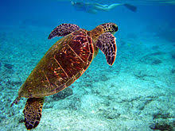
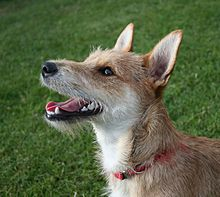
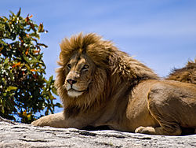

Animals are eukaryotic, multicellular organisms that form the biological kingdom Animalia. With few exceptions, animals are motile (able to move), heterotrophic (consume organic material), reproduce sexually, and their embryonic development includes a blastula stage. The body plan of the animal derives from this blastula, differentiating specialized tissues and organs as it develops; this plan eventually becomes fixed, although some undergo metamorphosis at some stage in their lives.
Turtles are reptiles of the order Testudines (or Chelonii[3]) characterized by a special bony or cartilaginous shell developed from their ribs and acting as a shield.[4] "Turtle" may refer to the order as a whole (American English) or to fresh-water and sea-dwelling testudines (British English).
The domestic dog (Canis lupus familiaris or Canis familiaris)[4] is a wolf-like canid in the genus Canis,[5] and is the most widely abundant terrestrial carnivore.The dog and the extant gray wolf are sister taxa as modern wolves are not closely related to the wolves that were first domesticated,[12][13] which implies that the direct ancestor of the dog is extinct.[14] The dog is the first species to be domesticated[13][15] and has been selectively bred over millennia for various behaviors, sensory capabilities, and physical attributes.
The lion (Panthera leo) is a species in the Felidae family and a member of the genus Panthera. It has been listed as Vulnerable on the IUCN Red List since 1996, as populations in African range countries declined by about 43% since the early 1990s. Lion populations are untenable outside designated protected areas. Although the cause of the decline is not fully understood, habitat loss and conflicts with humans are the greatest causes of concern.